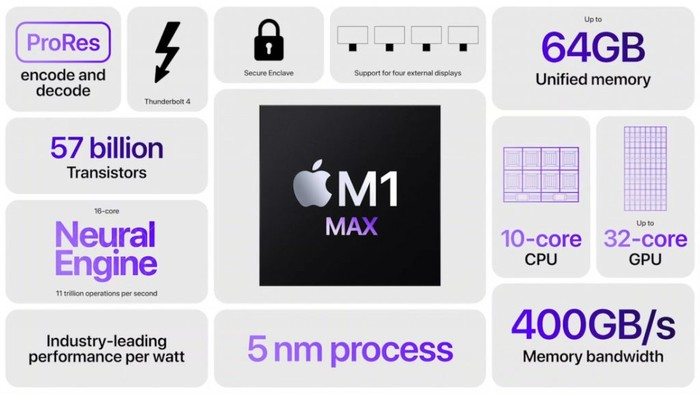

PROSESOR M1 MAX BUATAN APPLE
SEBERAPA KENCANG DAN APA KELEBIHAN M1 MAX
M1 MAX adalah sebuah chip prosesor buatan apple yang berbasis arsitektur ARM (Advanced RISC Machine) pertama yang dirancang oleh Apple khusus untuk digunakan di perangkat Mac. Mac terbaru Apple tidak dilengkapi dengan prosesor Intel. prosesor ini digunakan untuk mentenagai MacBook Pro model 16 inc. Apple mengklaim bahwa chipset M1 Max mempunyai performa yang setara dengan laptop grafis dan laptop gaming dengan GPU Nvidia atau AMD.
Berikut adalah spesifikasi dan teknologi yang ada pada M1 MAX :
Spesifikasi dari M1 MAX
- CPU 10-core yang sama kuatnya dengan M1 Pro
- GPU 32-core untuk kinerja grafis hingga 4x lebih cepat dari M1.
- 57 miliar transistor - 70% lebih banyak dari M1 Pro dan 3,5x lebih banyak dari M1
- GPU memberikan kinerja yang sebanding dengan GPU kelas atas di laptop PC pro yang ringkas sambil mengonsumsi daya hingga 40% lebih sedikit, dan kinerja yang serupa dengan GPU kelas atas di laptop PC terbesar saat menggunakan daya hingga 100 watt lebih sedikit
- Render garis waktu kompleks hingga 13x lebih cepat di Final Cut Pro dibandingkan dengan MacBook Pro 13 inci generasi sebelumnya.
- Menggandakan antarmuka memori dibandingkan dengan M1 Pro hingga 400GB/dtk, atau hampir 6x bandwidth memori M1.
- M1 Max dapat dikonfigurasi dengan memori terpadu cepat hingga 64GB.
- Encoding video 2x lebih cepat daripada M1 Pro, menampilkan dua akselerator ProRes.
- Dengan M1 Max, MacBook Pro baru dapat mentranskode video ProRes di Kompresor hingga 10x lebih cepat dibandingkan dengan MacBook Pro 16 inci generasi sebelumnya.
Teknologi khusus yang ditanamkan
- Neural Engine 16-core untuk akselerasi machine learning di perangkat dan performa kamera yang lebih baik.
- Display engine baru yang mendukung beberapa monitor eksternal.
- Tambahan pengontrol Thunderbolt 4 terintegrasi memberikan bandwidth I/O lebih banyak lagi.
- Prosesor sinyal gambar kustom Apple, bersama dengan Neural Engine, menggunakan video komputasional untuk meningkatkan kualitas gambar untuk video yang lebih tajam dan warna kulit yang tampak lebih alami pada kamera internal.
- Keamanan terbaik di kelasnya, termasuk Enklave Aman terbaru Apple, boot aman yang diverifikasi perangkat keras, dan teknologi anti-eksploitasi waktu proses.